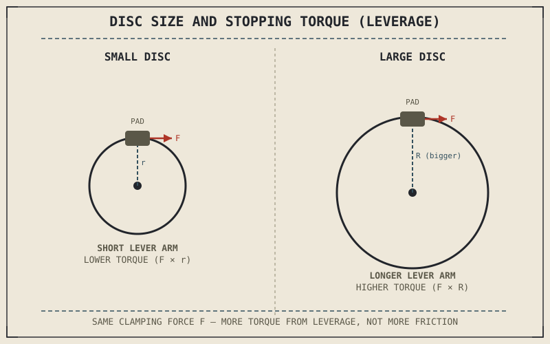

A larger brake disc doesn't grip any harder than a smaller one — the same caliper clamping the same pad against the same disc material generates exactly the same friction force regardless of the disc's diameter. What changes is leverage, and that single distinction, easy to overlook, explains why disc size is one of the first specifications anyone compares between motorcycles.
Chapter 7.1 framed braking as converting kinetic energy into heat through friction, applied through the wheel to the tyre's contact patch. This chapter turns that framing into the actual force and torque numbers that make it work.
Friction Force at the Pad
A brake caliper clamps its pads against the spinning disc with a clamping force set by hydraulic pressure in the caliper's pistons, and that clamping force generates a friction force at the pad-disc interface, proportional to the clamping force and the friction coefficient between pad and disc material — the same friction relationship Chapter 6.4 described at the tyre's contact patch, just relocated to a different pair of surfaces. This friction force acts tangentially to the disc, opposing its rotation, and is the raw mechanical input every other number in this chapter is built from.
From Force to Torque: Where Disc Size Comes In
Friction force alone doesn't stop a wheel — torque does, and torque is friction force multiplied by the distance from the disc's center to the point where the pad grips it. This is exactly why disc diameter matters so much: a larger disc places that same friction force farther from the axle, generating more stopping torque from an identical clamping force and identical pad material, purely through greater leverage. This is the same lever-arm principle Chapter 4.4 already used to explain how trail generates a self-centering moment from a comparatively small offset — geometry amplifying a force into a larger torque, applied here to slowing a wheel instead of steering one.
A bigger brake disc isn't gripping harder — it's applying the exact same friction force with more leverage. Torque, not raw friction, is what actually slows the wheel, and torque scales directly with how far from the axle that friction is applied.

A brake disc shown with the caliper's clamping force generating friction force at the pad, and a lever-arm diagram showing that same friction force multiplied by disc radius to produce stopping torque, compared between a small and a large disc.
From Torque to Actual Deceleration
Stopping torque at the wheel finally has to convert into a real force at the tyre's contact patch to actually decelerate the motorcycle, and that conversion runs through the wheel's rolling radius, the same way Chapter 6.8 described wheel diameter affecting rotating mass. A larger wheel needs proportionally more torque to generate the same contact-patch force as a smaller one, all else equal — which is one reason wheel size, tyre size, and brake disc size are never chosen independently of each other on a real motorcycle. But every bit of this chain, however carefully engineered, still terminates at the tyre's contact patch and the friction circle from Chapter 6.4, which sets the actual ceiling on how much of this calculated stopping force the road can absorb before the wheel simply locks.
A Common Misconception, Cleared Up Early
It's easy to look at a large front brake disc on a sportbike and assume the material itself, or the caliper, is somehow generating more raw stopping power than a smaller disc on a commuter bike. In most cases, both discs use broadly similar friction coefficients between pad and disc material; the meaningful difference is leverage and heat capacity, not some fundamentally superior grip at the friction surface. A bigger disc converts the same clamping force into more torque through geometry alone, and separately, its larger mass and surface area help it shed the heat Chapter 7.1 described without overheating under sustained hard use — two real, distinct advantages, neither of which is "more friction."
Where This Leads
Force and torque explain what a brake system needs to produce, but not yet how the physical hardware — discs, calipers, pads, and master cylinder — actually work together to produce it. Chapter 7.3 turns to that hardware directly.
Key Concepts to Remember
- Caliper clamping force generates friction force at the pad-disc interface, following the same friction relationship that governs grip at the tyre's contact patch.
- Stopping torque equals friction force multiplied by disc radius, which is why a larger disc produces more torque from identical clamping force through leverage alone.
- Torque converts to contact-patch deceleration force through the wheel's rolling radius, and the tyre's friction circle still sets the ultimate ceiling on usable stopping force.
- A larger disc's advantage is leverage and heat capacity, not fundamentally higher friction between pad and disc material.
Cross-References
| ← Ch. 7.1 | Framed braking as an energy-and-grip problem; this chapter supplies the actual force and torque mechanics behind that framing. |
| ← Ch. 4.4 | Used the same lever-arm principle to explain trail's self-centering moment; this chapter applies the identical geometry to disc-size stopping torque. |
| ← Ch. 6.4 | Established the friction circle as the ceiling on usable tyre force; this chapter shows braking torque still bounded by that same ceiling. |
| → Ch. 7.3 | Covers the physical braking system — discs, calipers, and master cylinders — that generates the force and torque described here. |